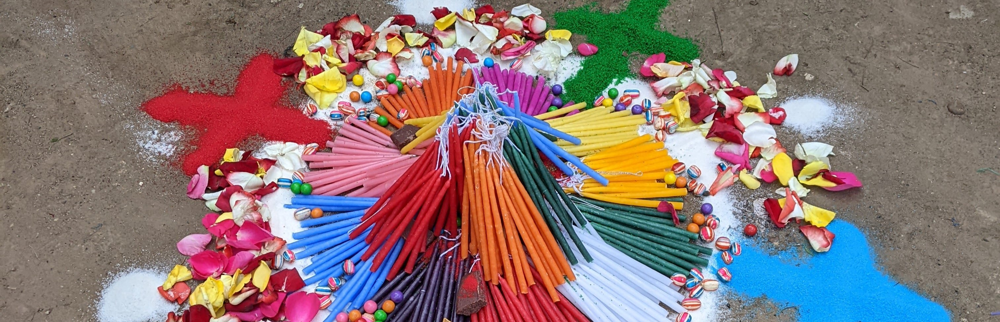

Chichicastenango K'iche' Language Documentation Project
K'iche' is one of the most widely spoken Mayan languages, with around 1 million speakers located primarily in the Guatemalan highlands. Each part of the K'iche' area has its own unique way of speaking the language. The Chichicastenango K'iche' Language Documentation Project focuses on recording in audio and in writing the speech of speakers from the town and vicinity of Chichicastenango. In the face of growing pressure to shift to Spanish, our aim is to highlight the value of the language and its unique characteristics as well as strengthen its use and preservation for future generations.
Santo Tomás Church
Gucumatz Arch
Chichicastenango outdoor market
The project began in 2018 and has resulted in a corpus of nearly seven hours of audio representing thirty speakers and comprising stories, recipes, discussions of local history and traditions, and personal memories. With the permission of the speakers, many of these recordings along with transcriptions and translations can be found in the Archive of the Indigenous Languages of Latin America, in the K'iche' Collection of Elizabeth Wood.
Recording with Juana Tol in 2019
(photo by Sebastián Mateo Tiniguar)
Recording with Abram Canil in 2022
(photo by Gricelda Mateo Jerónimo)
This project was made possible through the collaboration and support of Gricelda Mateo Jerónimo, Miguel Ignacio Ventura and the late Sebastián Mateo Tiniguar, and has been funded through the National Science Foundation, the Jacobs Research Funds and the University of Texas at Austin College of Liberal Arts.